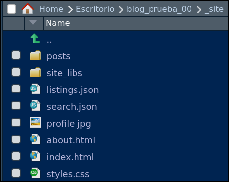

quarto create-project blog_prueba_00 --type website:blogTaller Córdoba (blog_01)
Setup
Blog en 3 minutos
Una vez tenemos instalados los programas vamos a ver el proceso de creación y la estructura de ficheros de un blog con Quarto de forma rápida. Ya tendremos tiempo de mejorarlo o tunearlo!!
Creación de un Rproject (para un blog)
Si en RStudio sigues la siguiente ruta de menús:
File > New Project > New Directory > Quarto Blogse te creará una carpeta, un Rproject, con todo lo necesario para crear un blog.El nombre que le he puesto a la carpeta/Rproject es
blog_prueba_00También podría crear el Rproject desde la Terminal de RStudio (panel inferior-izquierda), tecleando lo siguiente:
Con el Rproject que acabamos de crear, podremos generar un blog, será un blog sencillito, vamos con lo mínimo, pero un blog.
Pero … aún no veo el blog!! Sí, tienes razón, el blog lo crearemos despues de hacer un pequeño repaso a la estructura de carpetas y archivos del Rproject
Estructura de ficheros del Rproject
- El Rproject que acabamos de crear y que contiene nuestro blog tendrá esta estructura de archivos y carpetas:


Creación del blog
El Rproject que hemos creado tiene todo lo necesario para crear un blog para ello tenemos que:
- Ir al cuadrante superior-izquierda de RStudio, pinchar en la pestaña
Buildy pinchar enRender Website. Se procesarán los archivos del Rproject y se creará el blog. Podremos verlo en el cuadrante inferior-izquierda de RStudio, concretamente en la pestañaViewer. Se verá algo como esto:

Render Website se creará el blogRender Website se creará el blogPuedes ver aquí como quedaría el blog.
También podríamos haber generado el blog usando la Consola o la terminal desde RStudio. En ambos casos hay que estar en el Rproject “blog_prueba_00”; es decir, “blog_prueba_00” es el working directory
#- desde la Consola install.packages("quarto") quarto::quarto_render("index.qmd")#- desde la Terminal quarto render
Veamos otra vez la estructura de carpetas
- Tras haber creado el blog, la estructura de carpeta de nuestro Rproject quedará como:

Si comparamos la estructura de carpetas antes y despúes de hacer
Render Websitevemos que se han creado 2 carpetas:_freezey_siteLa carpeta
_freezepodemos dejarla para más adelante.La carpeta
_sitees la que realmente contiene el blog. Si alojas el contenido de esa carpeta en un servidor web se verá el blog que hemos creado. Antes de alojarlo, si quieres verlo puedes pinchar en el fichero./blog_prueba_00/_site/index.html.De esa forma podemos ver que la Home Page del blog es la lista de posts del blog. En el blog por defecto que hemos creado solo hay 2 post: uno de bienvenida y otro de.
Como ves el blog es muy sencillo, el Home Page es el listado de posts y solo tiene una página mas: About.
No vamos a comentarla pero abajo hay un pantallazo de la carpeta
_site.
Figure 4: _sitees la carpeta que contiene el blog
Alojando el blog
El blog que hemos creado no es muy interesante, pero vamos a ver lo fácil que es publicarlo en internet.
Hay muchas formas de alojar nuestro blog, por ejemplo Github Pages Netlify etc… , pero usaremos el usando el servicio Quartopub
Para publicar nuestro baby-blog en Quartopub sólo hay que teclear lo siguiente en la Terminal de RStudio (panel inferior-izquierda)
#- desde la Terminal
quarto publish quarto-pubTras ejecutar lo anterior, se te pedrirá que autorices en la Terminal. Después se abrirá el navegador, tendrás que logearte en
Quarto Puby volverás a autorizar. Además te preguntarán el nombre del blog.Si te fijas, tras haberse publicado el blog en “Quarto Pub”, se habrá creado un nuevo fichero en nuestro Rproject: es el fichero
_publish.yml. En él solamente están los metadatos necesarios para publicar y actualizar nuestro blog.
Figure 5: Fichero _publish.ymlcon la información para publicar el blog enQuarto Pub.
Referencias
(Algunos artículos sobre creación de blogs en Quarto)